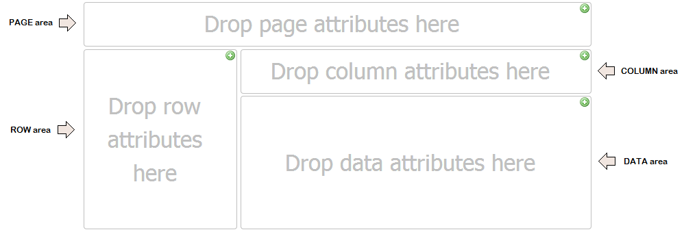

To understand what a GXquery Pivot table is and how it works we need to understand its basic structure. The Pivot table is composed of the following areas:
 Data areaThis area is used for performing various calculations over the data source and is the heart of the Pivot table. Data is usually included here to add income, count units, find average prices, etc. Therefore, we can say that to perform these operations the fields must be numeric. Rows areaData placed here shows the field’s unique values on the left side of the Pivot table. Typically, this area has at least one field even though it may have none. The data types included here are those that group and categorize, such as products, names, places, etc. and they can be of any type. Columns areaIt’s the one that has the column headers, and in particular are present in the Pivot table view. It’s ideal for creating a data matrix or showing trends over time. Any column can be dragged to the filters area and vice versa. Page areaThis area is located above the Pivot Table and contains an optional group of one or more drop-down controls, similar to combo boxes.
|
| Backlinks |
| Type property in QueryViewer control |